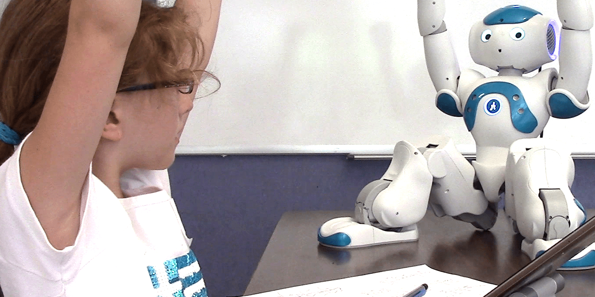
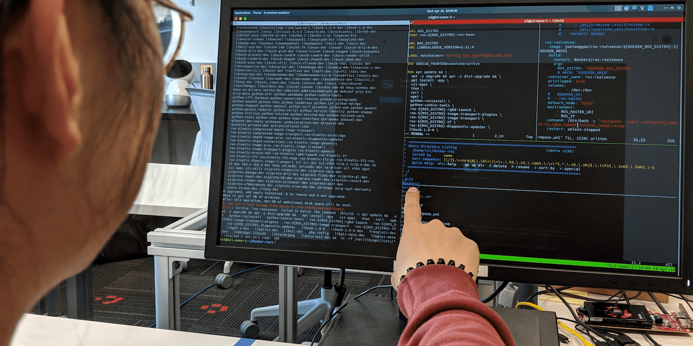

Research
Our research mission is to innovate intuitive, interactive technologies that assist and augment people. Towards this goal, we draw on human-computer interaction (HCI), robotics, and artificial intelligence (AI) and contextualize our research in domains such as healthcare, education, and manufacturing.
Human-Robot Teaming
 Robots that are capable of working alongside humans hold great promise in augmenting people’s capabilities and productivity. To enable seamless human-robot teamwork, we aim to (a) understand how people work together as a team in achieving common goals, (2) develop interactive robot systems that can work cooperatively with people as informed by our understanding of human teamwork, and (3) deploy and evaluate how cooperative robots may increase task performance and enhance user experience. We have focused on (i) deciphering human behavioral cues (e.g., eye gaze) for recognizing task intent (RSS'15, HRI'16), (ii) synthesizing intuitive robot behaviors to facilitate collaborative activities (HRI'14), and (iii) developing interfaces and methods for people to re-skill robots to perform custom tasks (IUI'19).
Robots that are capable of working alongside humans hold great promise in augmenting people’s capabilities and productivity. To enable seamless human-robot teamwork, we aim to (a) understand how people work together as a team in achieving common goals, (2) develop interactive robot systems that can work cooperatively with people as informed by our understanding of human teamwork, and (3) deploy and evaluate how cooperative robots may increase task performance and enhance user experience. We have focused on (i) deciphering human behavioral cues (e.g., eye gaze) for recognizing task intent (RSS'15, HRI'16), (ii) synthesizing intuitive robot behaviors to facilitate collaborative activities (HRI'14), and (iii) developing interfaces and methods for people to re-skill robots to perform custom tasks (IUI'19).
Selected Publications
Gao, Y., Huang, C.-M. (2019). PATI: A Projection-based Augmented Table-Top Interface for Robot Programming. In Proceedings of the 2019 ACM International Conference on Intelligent User Interface (IUI’19).
[link] [project page] |
Huang, C.-M. and Mutlu, B. (2016). Anticipatory Robot Control for Efficient Human-Robot Collaboration. In Proceedings of the 2016 ACM/IEEE International Conference on Human-Robot Interaction (HRI’16).
[link] |
Huang, C.-M., Cakmak, M., and Mutlu, B. (2015). Adaptive Coordination Strategies for Human-Robot Handovers. In Proceedings of the 2015 Robotics: Science and Systems Conference (RSS’15).
[link] |
Huang, C.-M. and Mutlu, B. (2014). Learning-based Modeling of Multimodal Behaviors for Humanlike Robots. In Proceedings of the 2014 ACM/IEEE International Conference on Human-Robot Interaction (HRI’14).
[link] |
Sponsor
This line of research is currently funded by Johns Hopkins University and JHU Applied Physics Laboratory.
Socially Assistive Robotics
 Socially Assistive Robots (SAR) are robots that provide assistance through social, as opposed to physical, interactions. These robots have potential to provide cognitive, behavioral, and therapeutic support for people with diverse characteristics and needs. Our research has explored (1) how SARs can positively impact children’s learning by providing timely cognitive (HRI’17) and meta-cognitive (HRI’18) support and (2) how SARs can aid in behavioral intervention for children with Autism Spectrum Disorders (ASD) (Science Robotics).
Selected Publications
Scassellati, B., Boccanfuso, L.*, Huang, C.-M.*, Mademtzi, M.*, Qin, M.*, Salomons, N.*, Ventola, P., and Shic, F. (2018). Improving Social Skills in Children with ASD Using a Long-Term, In-Home Social Robot. Science Robotics. *equal contribution.
[link]
Ramachandran, A., Huang, C.-M., Gartland, E. and Scassellati, B. (2018). Thinking Aloud with a Tutoring Robot to Enhance Learning. In Proceedings of the 2018 ACM/IEEE International Conference on Human-Robot Interaction (HRI’18).
[link] |
Ramachandran, A., Huang, C.-M. and Scassellati, B. (2017). Give Me a Break! Personalized Timing Strategies to Promote Learning in Robot-Child Tutoring. In Proceedings of the 2017 ACM/IEEE International Conference on Human-Robot Interaction (HRI’17).
[link] |
Sponsor
This line of research is currently funded by the Malone Center for Engineering in Healthcare.
Human-AI Interaction
 AI systems are being integrated into critical domains such healthcare to enhance human work. While powerful, these systems present unique, complex design challenges that need to be addressed in order to reach their full potential. We use human-centered design methods to explore how AI systems should be designed to maximize human-AI team performance and to ensure safety and user experience. Our current effort focuses on studying human-AI cognitive teaming in the context of medical decision making.
Sponsor
This line of research is currently funded by the National Science Foundation (award info).